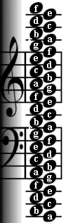
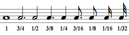
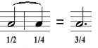
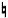
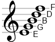
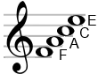
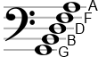
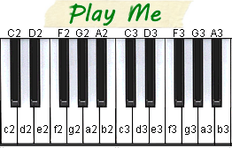
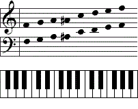

How to read Sheet Music / Notes - A Quick Reference
The Notes:

Timing Durations for Notes:

Tied Notes:

Timing Durations for Rests:
 a rest is held.")
Accidentals:
= sharp
= flat
 = natural
Understanding these symbols enables you to read most types of sheet music.
Sheet Music Basics for Beginners
Music is all about the notes, baby.
So let's get to better know the notes.
In its simplest form (excluding sharps and flats) there are only 7 notes that repeat
over many octaves.
(Octaves tell us how high or low pitched the note is.
Higher octave = higher pitch.)
The seven notes have the following names:
Do, Re, Mi, Fa, So, La, Ti.
Just kidding. Unless you starred in The Sound of Music or reside in Europe.
But even so, it's time to hear the truth.
Those little latin-ish words are cute but ridiculous.
Here are the real names for the seven notes:
A, B, C, D, E, F, G.
It's a seven letter alphabet, pretty easy right? Nope.
The notes actually start with "C", just to make sure it isn't too easy for beginners to understand.
In other words:
C, D, E, F, G, A, B.
See what happened there? "A" and "B" got sent to the back. Once past "G", the notes start over at "A".
There are also steps between the notes called sharps and flats.
If you include the sharps () or flats ()
there are actually 12 notes that repeat over many octaves:
- - or - -
C, D, D, E, E, F, G, G, A, A, B, B.
Sharps and flats can usually be used interchangeably (C♯ = D♭), though there are rules (surprise!)
when you should use one or the other. You don't want to know.
Some instruments can play half (and even less!) of a sharp or flat.
We don't want to know. You may have noticed that we didn't list an E♯, B♯, C♭ or F♭ above and thought,
"What's up with that? Those morons forgot about 4 notes!" Well aren't you observant?
Technically you are right, smart guy, all of the notes do have sharps and flats and we didn't list them all.
We did this on purpose.
It is redundant to list them because the sharps and flats of some notes are actually identical to
their adjacent note. For instance, E♯ is technically an F, and F♭ is technically an E.
Now that you've been properly introduced to the note names, let's see what they look like in sheet music.
Staff / Stave
A Note on a staff
Indicates the pitch/tone and duration
Our happy little oval friends. Some are solid black, others a hollowed out shell of their former selves. Some have sticks up their butts, others have flags. These differences indicate how long the note should last. See the quick reference above.The Treble Clef
For higher pitched notes
Stay out of treble if you're a Tuba.The Bass Clef
For lower pitched notes
Reserved for Barry White, Darth Vader and YOUR MOM! Oh!The exact note to play is denoted (pun intended) by the clef and the vertical location of the note on the staff. Side note: I once entered ten puns in a pun contest thinking at least one of them would win, but no pun in ten did. haha! Let's have a look at what appears to be the same note on the treble clef and the bass clef. For instance:
"B" Note on the Treble Clef
"D" Note on the Bass Clef
This is pretty stupid. The creators of sheet music apparently wanted to make sure that no one could understand what they had created. But wait, it gets worse! There are even more clefs! We'll spare you the details, as the treble and the bass clefs are by far the two most common.
Ready to throw down sheet music and take up juggling yet? We don't blame you. Just like the people who love it, sheet music is complicated. I'm talking to you, Allison. Because of this, well intentioned music teachers often resort to using mnemonic devices to help remember the note names. You may have heard "Every Good Boy Does Fine" as a way to remember the notes on the lines in the treble clef, "E, G, B, D, F" (because reading from bottom to top just makes sense). For the notes in between the treble clef lines, just remember "F, A, C, E", which is probably what you are palming right now.
 For the bass clef, it's just a matter of memorizing "Good Boys Do Fine Always" to remember the notes on the lines and "Anachronistic, Convoluted, Elaborate, Gratuitous" for the notes between the lines.

Finally for the notes above the treble clef, below the bass clef, and everything in between simply bang your head repeatedly on the keys a grand piano.
 that.
that.
Instead of all that nonsense, we recommend that you simply:
Memorize a single note on each clef.
This will serve as a reference point which you can use to determine all other notes by simply following (counting?) them up or down. For instance, let's use the treble clef and use the "B" note as our reference.
"B" Note on the Treble Clef
Knowing that the notes are A, B, C, D, E, F, G... A, B, C, D, E, F, G... etc... we can simply count up or down the staff to figure out any note. For instance:
"C" Note on the Treble Clef
"C" comes after "B", so...
"C" sits above the line that "B" sits on."A" Note on the Treble Clef
"A" comes before "B", so...
"A" sits below the line that "B" sits on."G" Note on the Treble Clef
"G" comes before "A" (the notes loop back to "G", but on a lower octave), so...
"G" sits below the line that "A" sits on.Once you read enough sheet music you will simply remember all the notes. Now that you know how to read the notes, all you have to do is read them from left to right! Oh and up and down as well. "WTF?" you say? Yep, notes above/below each other on the same staff are played simultaneously. That's called a chord, Beethoven.
Now that you can read sheet music and know the notes, grab your instrument and make some noise!
How to Read Sheet Music for Pianists
Here we have the notes (and octaves) written on the keys of a ridiculously simple piano. Play it if you like. We won't judge.

Keys, Notes and Octaves... oh my!
A full sized piano has a whopping 88 keys. Keyboards will usually have 76 keys, 61 keys, 49 keys or 37 keys. Come back later to see all the different piano key maps ?
Here's a simple example of sheet music played on a piano - the scale of "f" played on two octaves:

Advanced Tips: How to Sight Read Sheet Music
F the Note Names
By "F" we meant "Forget". But not completely. Reading and playing sheet music by mentally converting sheet music into note names into hand movements is how many beginners learn to play music. However, advanced musicians don't need to identify all the note names as they play. To do so would be a nearly impossible mental task for anyone playing an advanced piece of music. The fastest way to read sheet music is to just know that a note equals a specific key (so you don't even think about the name of the note). The good news is this will happen naturally the more you read music. But it might take a little bit of practice. Okay, a lot of practice.
See the Distance
A common technique (especially useful with chords) is to use the vertical distance between notes as the distance to move on the piano. Some even recommend to rotate your sheet music clockwise 90 degrees so the notes on the sheet (somewhat) vertically align to the piano keys. What you are doing in this exercise is identifying how far apart notes are from each other and moving that same distance on the piano. Once you can quickly identify the distances (aka intervals) in the sheet music and can move the same distance on the piano without looking at your hands then you will be a sight reading master. This is much harder than it sounds. Good luck.
Improve Your Pitch
While there is some evidence that pitch detection comes more naturally to some, improving your perfect/absolute and relative pitch is possible and will help you be an all around better musician and should also help with sight reading. A good exercise to test your pitch sense is to sing/hum/whistle a random note (pick a note, any note) and then try to play that same note on your instrument. You might be surprised at how bad you are at this. It's not too late to quit now. Maybe try your hand at stamp collecting? If we haven't convinced you yet to throw in the towel, checkout this site to test (and possibly improve) your tonal recognition abilities.
Your Tip Here
We would love to share more tips with you but we are actually quite terrible at sight reading. Don't worry, the tips you just half read were written by people who claimed they were better than some at sight reading. Since you are still reading this, you are probably just as bad as we are. But if you are better than slightly terrible at sight reading, won't you help us out by posting your tips and knowledge in the comments below?
Alternatives to Sheet Music
Had enough yet? We tried to warn you that sheet music is complicated. But before you throw down your instrument and take up quilting, there is one thing you should know. The sheet music we know and love/hate today was developed - nay popularized - by people in the 15th century. These people used toxic lead in their paint [1] and believed the earth was the center of the universe. But there's a new notation on the scene, and it's a bit more up to date than the one brought forth by medieval rapscallions. Lucky for you we are all about this next best thing... called tablature (or tabs, if you're in a hurry). What sayeth thou?


Before you real musicians get too huffy, we should mention sheet music has vastly
improved changed
since the days when witches were burned at the stake.
And even though the
tab format is faster and easier,
we realize some of you fuddy duddies still prefer your sheet music, wearing your powdered wigs and
riding in your horse drawn carriages.
For you classically trained old timers, we are working on tools to convert tabs directly into sheet music!
Let's make some beautiful music together!
We are classically trained, unconventionally educated professional amateur musicians. While we find tabs easier to learn, read and write than sheet music notation there is admittedly a trade-off: tabs do not presently provide the same level of detail, complexity and frustration that sheet music does. Good thing music these days is made from the same 4 chords.